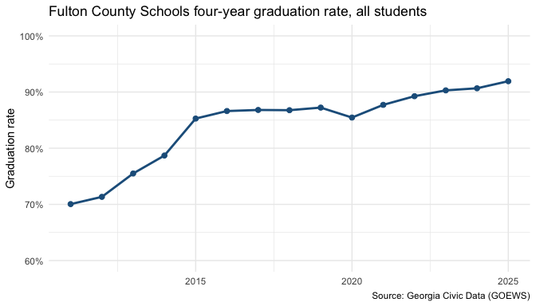
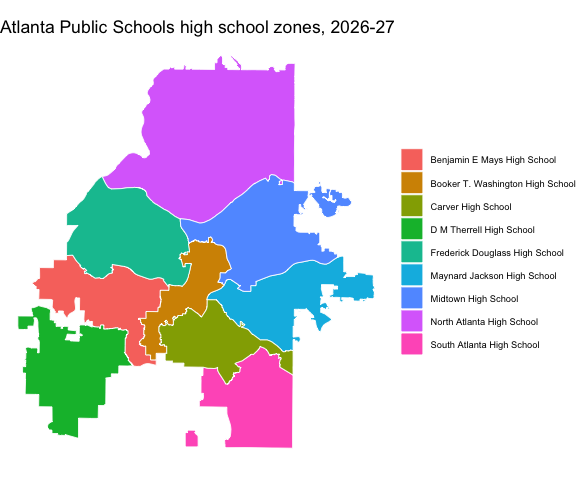

georgiacivicdata brings Georgia’s public data into R. It is the R client for the API run by Georgia Civic Data.
Georgia Civic Data gathers, organizes, and standardizes Georgia’s public data, helping residents, parents, researchers, and professionals find answers in data that is already theirs. Georgia’s public data is spread across dozens of agency websites as PDFs, spreadsheets and CSV files, and each source names its columns, student groups and places in its own way. Georgia Civic Data does that cleanup once. It puts every dataset in the same shape, with the same codes for counties, school districts, schools and demographic groups, so datasets from different agencies can be compared and joined. The data covers education, Census, health and immigration, at levels from the whole state down to single schools and Census tracts. Each dataset comes with a data contract that documents its source, its columns and the limits of the data.
The cleaned data is free to use through four channels: a point-and-click chart builder, a chatbot that answers questions in English or Spanish, a public API, and a connector for AI assistants. Georgia Civic Data is independent and is not affiliated with the State of Georgia or any of its agencies.
This package works with the public API so you don’t have to. You find datasets, read their documentation, and get rows, all from R. Results come back as tibbles with the right column types: codes stay text so leading zeros survive, years are integers, and rates are proportions between 0 and 1. Every school, district and county code comes with its name, and you can filter by name instead of code. School attendance zones and district boundaries come back as ‘sf’ objects, ready to map, and you can look up the schools zoned for any Georgia address. There is no API key and nothing to configure.
Installation
Install the development version from GitHub:
# install.packages("pak")
pak::pak("shanejorr/georgia-data-rpackage")Example: graduation rates in Fulton County
This walkthrough answers one question from start to finish: how has the high school graduation rate in Fulton County Schools changed over time? It follows the usual workflow: find a dataset, learn what is in it, download the rows you need, and plot them.
Step 1: find the right dataset
Every dataset has a short name, such as graduation_rate_4_year_cohort, and you need that name to get data. If you don’t know it, gcd_search() searches the catalog in plain words. It matches both keywords and meaning, so you don’t need the exact wording of a dataset’s title. Each result has the dataset’s name, its title, and the first and last years it covers.
library(georgiacivicdata)
gcd_search("high school graduation", n = 5)[, c("name", "title", "year_min", "year_max")]
#> ℹ Lookup tables that match: "schools" and "districts". See `gcd_dimension()`.
#> # A tibble: 5 × 4
#> name title year_min year_max
#> <chr> <chr> <int> <int>
#> 1 ccrpi_graduation_rate High School Graduation Rates 2012 2025
#> 2 graduation_rate_4_year_cohort Four-Year Cohort Graduation Rate 2004 2025
#> 3 high_school_completers High School Completers 2011 2025
#> 4 postsecondary_c11 Postsecondary Enrollment of HS Graduate… 2010 2023
#> 5 postsecondary_c12 Postsecondary Outcomes of HS Graduates … 2008 2021The four-year cohort graduation rate, graduation_rate_4_year_cohort, is the one we want: the share of students who graduate within four years of starting ninth grade. To browse instead of search, gcd_datasets() lists the whole catalog, about 176 datasets.
Step 2: learn what is in it
Before downloading anything, check what each row holds. gcd_columns() lists a dataset’s columns with their type, their role (a year, a place, a demographic group, or a measured value), and their unit.
gcd_columns("graduation_rate_4_year_cohort")[, c("column", "type", "role", "unit")]
#> # A tibble: 7 × 4
#> column type role unit
#> <chr> <chr> <chr> <chr>
#> 1 year integer year <NA>
#> 2 district_code string fk_district <NA>
#> 3 school_code string fk_school <NA>
#> 4 demographic string fk_demographic <NA>
#> 5 num_graduates integer metric count
#> 6 num_cohort integer metric count
#> 7 graduation_rate number metric proportionEach row is one year, one place and one demographic group. The value we want is graduation_rate, a proportion on the 0-1 scale, so 0.9 means 90%.
gcd_describe() prints the rest of the dataset’s documentation: its source, the years and detail levels it covers, and notes on how to use it. Those notes matter here. Georgia changed how it calculates the graduation rate in 2011, so the rates before and after 2011 are not comparable. We will start the series in 2011.
Step 3: get the rows
gcd_rows() downloads a dataset’s rows as a tibble. Filters narrow the request:
-
districttakes a district’s name and turns it into the district code for you (district_codetakes the code directly). -
detail = "districts"asks for district-wide figures rather than one row per school. -
demographicpicks the student groups;"all"is every student. -
yearpicks the years.
grads <- gcd_rows(
"graduation_rate_4_year_cohort",
district = "Fulton County",
detail = "districts",
demographic = c("all", "black", "hispanic", "white"),
year = 2011:2025
)
#> ℹ This result contains NULL metric cells, which mean the value was SUPPRESSED (small
#> counts), not zero — do not report or chart a NULL as 0 (see null_semantics and each
#> column's null_meaning).
#> ℹ Demographic groups overlap across categories and may overlap within a category
#> (active_duty can be a subset of military_connected). Read the dataset's definitions and
#> non_additive declarations. Use the published `all` total when available, never add it
#> to its subgroups. Counts reconcile only for complete, disjoint groups; subgroup rates
#> generally do not add to the overall rate.
#> ℹ `district_census_id` is a 5-digit Census school-district code, NOT a county FIPS, and a
#> district is not 1:1 with a county — do not map these district rows as counties.
grads
#> # A tibble: 60 × 11
#> year district_code district_name district_census_id district_type demographic
#> <int> <chr> <chr> <chr> <chr> <chr>
#> 1 2011 660 Fulton County 02280 standard all
#> 2 2011 660 Fulton County 02280 standard black
#> 3 2011 660 Fulton County 02280 standard hispanic
#> 4 2011 660 Fulton County 02280 standard white
#> 5 2012 660 Fulton County 02280 standard all
#> 6 2012 660 Fulton County 02280 standard black
#> 7 2012 660 Fulton County 02280 standard hispanic
#> 8 2012 660 Fulton County 02280 standard white
#> 9 2013 660 Fulton County 02280 standard all
#> 10 2013 660 Fulton County 02280 standard black
#> # ℹ 50 more rows
#> # ℹ 5 more variables: demographic_label <chr>, demographic_category <chr>,
#> # num_graduates <int>, num_cohort <int>, graduation_rate <dbl>Each place comes back with both its code and its name, and each demographic code with a readable label. The API also prints advisories as messages. Here they warn that the all total sits beside the subgroups, so never add a total to its subgroups. A missing value (NA) usually means the figure was suppressed to protect small groups, not that it is zero.
Step 4: plot the overall rate
The tibble works with any R tool. To plot the overall rate over time, keep the rows where demographic is "all" and draw a line with ‘ggplot2’.
library(ggplot2)
grads_all <- grads[grads$demographic == "all", ]
ggplot(grads_all, aes(x = year, y = graduation_rate)) +
geom_line(colour = "#1f5f8b", linewidth = 1) +
geom_point(colour = "#1f5f8b", size = 2) +
scale_y_continuous(labels = scales::label_percent(), limits = c(0.6, 1)) +
labs(
title = "Fulton County Schools four-year graduation rate, all students",
x = NULL, y = "Graduation rate",
caption = "Source: Georgia Civic Data (GOEWS)"
) +
theme_minimal()
Lookup tables
Shared lookup tables, called dimensions, hold the names and attributes of districts, schools, counties and demographic groups. gcd_dimension() returns one, with the same name filters as gcd_rows(). Here are the active high schools in Fulton County with their locale (city, suburb, town or rural):
gcd_dimension("schools", district = "Fulton County", school_level = "high",
active = TRUE,
columns = c("district_code", "school_code", "school_name", "locale"))
#> # A tibble: 22 × 4
#> district_code school_code school_name locale
#> <chr> <chr> <chr> <chr>
#> 1 660 0106 Milton High School suburb
#> 2 660 0118 Hapeville Charter Career Academy suburb
#> 3 660 0119 Cambridge High School suburb
#> 4 660 0176 Banneker High School suburb
#> 5 660 0191 Roswell High School city
#> 6 660 0198 Centennial High School city
#> 7 660 0203 Northview High School suburb
#> 8 660 0205 Alpharetta High School city
#> 9 660 0291 Creekside High School suburb
#> 10 660 0386 Independence High School city
#> # ℹ 12 more rowsSchool zones and places
gcd_school_zones() returns school attendance zones as an ‘sf’ object, ready to map. This map shows the high school zones in Atlanta Public Schools:
zones <- gcd_school_zones(district = "Atlanta Public Schools", zone_level = "high")
ggplot(zones) +
geom_sf(aes(fill = school_name), colour = "white", linewidth = 0.3) +
labs(title = "Atlanta Public Schools high school zones, 2026-27", fill = NULL) +
theme_void() +
theme(legend.text = element_text(size = 7))
gcd_locate() goes the other way: give it an address or a point, and it returns the places that contain it, including the county, Census tract, school district and zoned schools. Addresses are geocoded on your computer with the U.S. Census geocoder, so only the point reaches the Georgia Civic Data API.
# The Georgia State Capitol
gcd_locate(address = "206 Washington St SW, Atlanta, GA 30334")[
, c("geographic_type", "geographic_id", "geographic_name", "grades")
]
#> ℹ A zone is the default assignment, not the only option: a Georgia student may attend
#> another public school by transfer, or a charter, magnet or other choice school. See
#> attendance_rules for the main ways.
#> # A tibble: 7 × 4
#> geographic_type geographic_id geographic_name grades
#> <chr> <chr> <chr> <chr>
#> 1 county 13121 Fulton <NA>
#> 2 tract 13121003500 Census Tract 35 <NA>
#> 3 block_group 131210035001 Block Group 1, Census Tract 35, Fulton County <NA>
#> 4 school_district 761 Atlanta Public Schools <NA>
#> 5 elementary_school 761-0199 Centennial Academy (Charter) K-5
#> 6 middle_school 761-0199 Centennial Academy (Charter) 6-8
#> 7 high_school 761-4560 Midtown High School 9-12Data license and citation
The data is published under the Creative Commons Attribution 4.0 International license (CC BY 4.0): credit Georgia Civic Data and the original source. gcd_citation() writes the citation for any result:
gcd_citation(grads)
#> [1] "Four-Year Cohort Graduation Rate. Georgia Civic Data (georgiacivicdata.org), CC BY 4.0. https://georgiacivicdata.org/api/v1/datasets/graduation_rate_4_year_cohort. Original source: Governor's Office of Education and Workforce Strategy (GOEWS, formerly GOSA)."The package code is MIT-licensed.
Learn more
- Package website: https://georgiacivicdata.org/r/
- Georgia Civic Data: https://georgiacivicdata.org
- API documentation: https://georgiacivicdata.org/docs